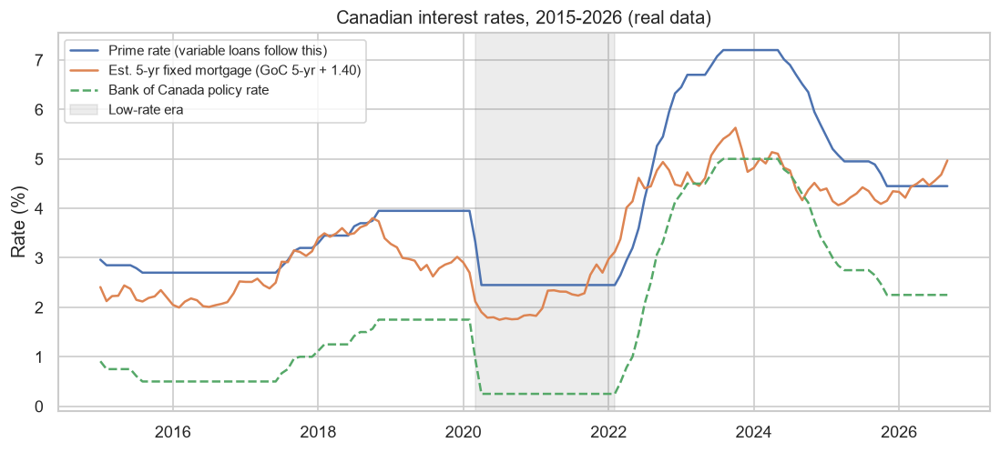
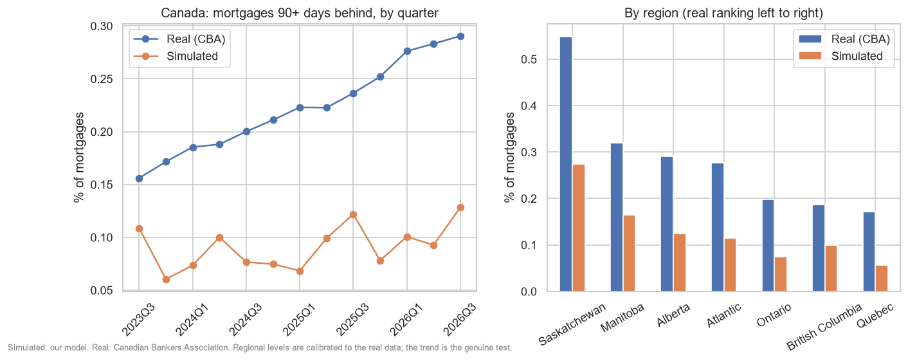
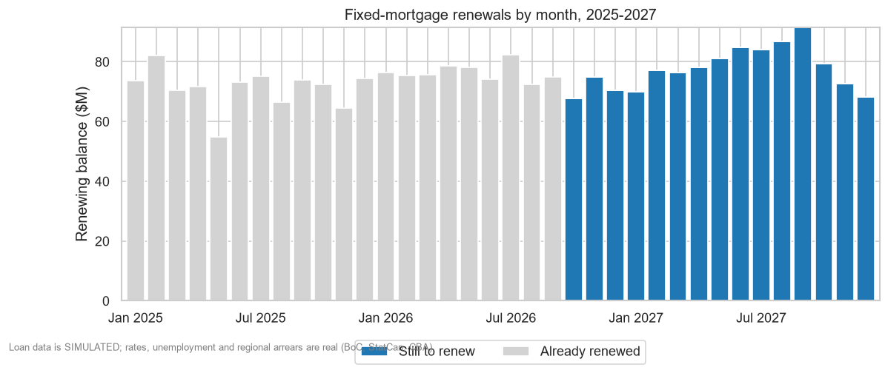
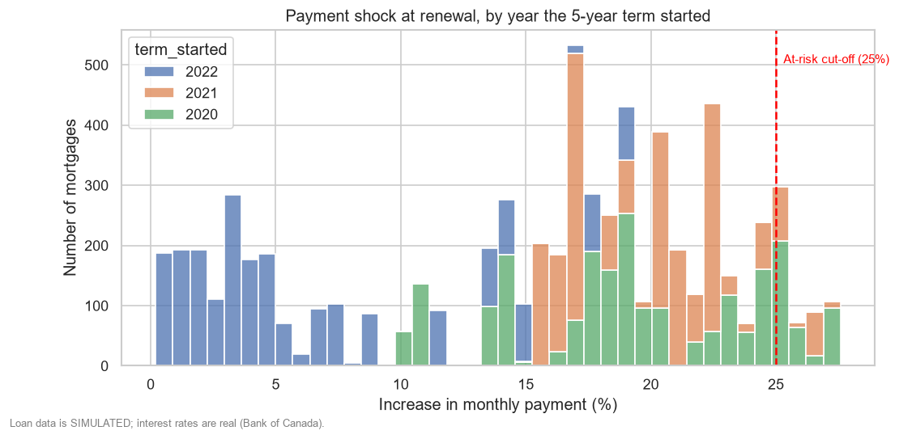
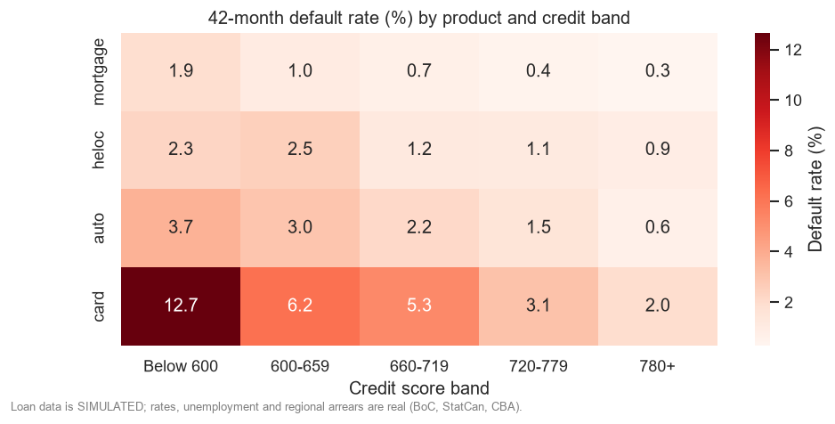
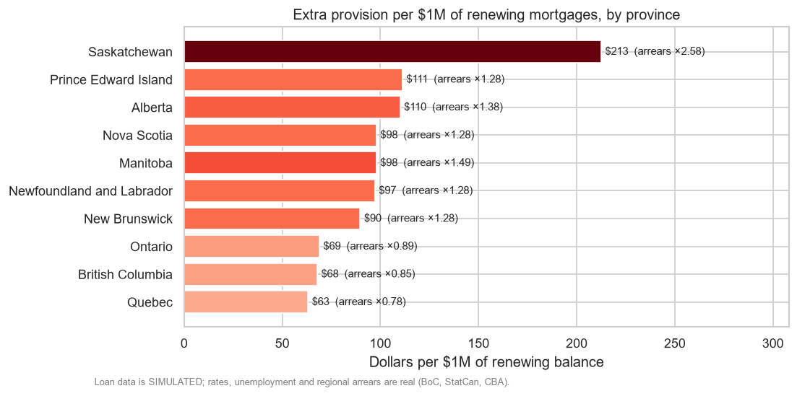
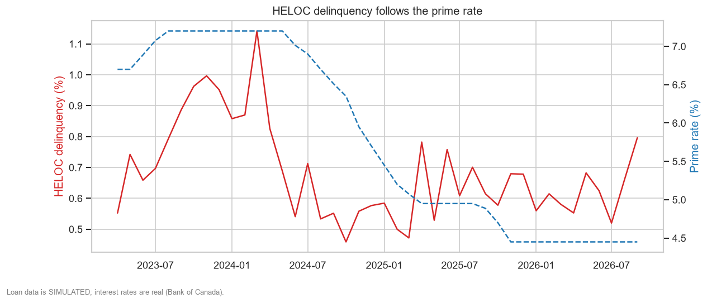

Learning deck · narrated
Canada's Mortgage Renewal Wave
Your credit risk project, explained from zero. Press Play and listen; the slides build as the voice talks.
Money basics
Loans, interest, mortgages, rates, credit scores.
Risk and losses
Late payments, default, provisions.
The project
Problem, data, approach, challenges, results.
Space = play / pause · ← → = previous / next slide · while paused, click the slide to step one line at a time.
- Welcome. This presentation explains your credit risk project from the very beginning.
- You don't need to know anything about banks, loans, or interest rates. We'll build it up one idea at a time, in three parts: money basics, risk and losses, and then the project itself.
- Use the space bar to pause, and the arrow keys to move between slides. You can change the voice and the speed at the bottom of the screen.
- Let's start with the whole story in two minutes.
The big picture
The whole story in one slide
Families borrow to buy a home and repay over 25 years.
The interest rate is only locked for 5 years, then it's renewed.
Record-low rates in 2020–22, then a sharp rise.
Monthly payments jump at renewal.
- In Canada, most people who buy a home borrow the money. That loan is called a mortgage.
- They pay it back over twenty-five years.
- But the interest rate is only locked for five years. After that, they must renew at whatever the rate is then.
- Between 2020 and early 2022, rates were at record lows, around two percent. Then they jumped, to around five or six percent.
- So families who locked in cheap rates are now renewing at much higher ones, and their monthly payment jumps. That jump is called payment shock.
The big picture
Five questions the bank needs answered
Real interest rates, unemployment, mortgage arrears + Simulated 50,000 loans
- A bank wants to know five things before this happens.
- First, which mortgages renew, and when?
- Second, how much does each payment go up?
- Third, who is likely to struggle?
- Fourth, how much money should the bank set aside for losses?
- And fifth, who should the bank call first, to help them before they fall behind?
- Your project answers all five, using real Canadian data, on interest rates, unemployment and mortgage arrears, and a simulated set of fifty thousand loans.
Money basics
What a loan is
The amount you borrow.
Charged on what you owe, every year.
The fee as a percentage.
What you still owe right now.
Interest is rent on money. Rent an apartment, pay rent. Rent $500,000 from a bank, pay interest. The rate is the rent price.
- A loan is money a bank gives you now, which you promise to pay back later, plus a fee.
- The amount you borrow is the principal. For example, five hundred thousand dollars.
- The fee is interest. It's charged as a percentage of what you owe, every year. That percentage is the interest rate.
- What you still owe at any moment is the balance.
- Here's the easiest way to think about it. Interest is rent on money. You rent an apartment and pay rent for using it. You rent money from a bank and pay interest for using it. The interest rate is the rent price.
Money basics
Where a monthly payment goes
$500,000 at 1.9%, repaid over 25 years: $2,095 a month.
AmortizationAs the balance falls, less of each payment is interest and more pays down the loan.
- Most loans are repaid in equal monthly payments. Each payment has two parts.
- Take a five hundred thousand dollar loan at one point nine percent, paid over twenty-five years. The monthly payment is two thousand and ninety-five dollars.
- In the first month, seven hundred and ninety-two dollars of that is interest. That's the rent.
- The other one thousand three hundred and three dollars pays down the loan itself.
- As the balance falls, less goes to interest and more goes to paying down the loan. Paying a loan off like this is called amortization.
Money basics
Percent vs percentage points
Three percentage points.
Why bankers avoid "percent" here.
1 bp = 0.01 percentage points.
On a $500,000 loan, each percentage point is roughly $5,000 more interest a year.
- One small but important piece of vocabulary.
- If a rate goes from two percent to five percent, it rose by three percentage points.
- But in relative terms, it rose by one hundred and fifty percent. Both describe the same change, which is why bankers avoid saying percent here.
- They say percentage points, or basis points. One basis point is one hundredth of a percentage point. So three percentage points is three hundred basis points.
- On a big loan, small rate changes are big money. On five hundred thousand dollars, each percentage point is roughly five thousand dollars more interest a year.
Mortgages
Two clocks on one mortgage
When a term ends, you sign a new rate at today's rates. You can't keep the old one.
A 25-year mortgage is five separate 5-year rate deals in a row.
- A mortgage is a loan to buy a home. The home is the collateral. If you stop paying, the bank can sell it.
- Every Canadian mortgage runs on two different clocks. The first is the amortization: how long until the loan is fully paid off. Usually twenty-five years.
- The second is the term: how long the interest rate is locked. Usually five years.
- When a term ends, you renew. You sign a new rate, at whatever rates are at that time. You can't keep the old one.
- So a twenty-five year mortgage is really five separate five-year rate deals in a row. The gap between those two clocks is the entire project.
Mortgages
A phone contract for your house
Keep the phone for years
The price plan is locked for 2 years. Then you sign a new plan at today's prices.
Keep the house for 25 years
The rate is locked for 5 years. Then you renew at today's rates.
In the US, the most common mortgage locks the rate for all 30 years. Canadians feel rate rises at renewal; Americans mostly don't.
- Here's an analogy. Think of a phone contract.
- You keep the phone for years, but the price plan is only locked for a two-year contract. When it ends, you sign a new plan at today's prices.
- A Canadian mortgage works the same way, except the contract is five years and the phone is your house.
- This is why the problem is specifically Canadian. In the United States, the most common mortgage locks the rate for all thirty years. So when rates rise, American homeowners mostly don't feel it. Canadian homeowners feel it at renewal.
Mortgages
Payment shock, worked out
| Signed 2021 | Renews 2026 | |
|---|---|---|
| Balance | $500,000 | $418,032 |
| Rate | 1.9% | 5.0% |
| Years left | 25 | 20 |
| Monthly payment | $2,095 | $2,759 |
payment shock = new payment ÷ old payment − 1
- Let's work through one family.
- In 2021 they borrow five hundred thousand dollars over twenty-five years, at one point nine percent. Their payment is two thousand and ninety-five dollars a month.
- Five years later, they've paid the balance down to about four hundred and eighteen thousand dollars, with twenty years left.
- They renew at five percent. Their new payment is two thousand seven hundred and fifty-nine dollars a month.
- That's six hundred and sixty-four dollars more every month. About eight thousand dollars more a year. A thirty-two percent higher payment.
- Same house. Same family. Same loan. Only the rate changed. That increase is payment shock: the new payment divided by the old payment, minus one.
Mortgages
Fixed vs variable rates
Locked for the term, then a jump
Feels nothing until renewal, then feels it all at once.
Moves with prime, month by month
Feels rate rises gradually, as they happen.
The renewal analysis covers fixed mortgages only. Variable borrowers have already felt the increases.
- There are two kinds of mortgage rate.
- A fixed rate is locked for the whole term. When rates rise, the borrower feels nothing until renewal, and then feels it all at once.
- A variable rate moves with the bank's prime rate, every month. When rates rise, the pain arrives gradually.
- That's why the renewal analysis in this project looks only at fixed mortgages. Variable borrowers have already felt the increases as they happened.
Interest rates
Where rates come from
Policy rate
The base price of money. Raised to fight inflation, cut to support the economy.
Prime rate = policy + 2.2 pp
The base for variable loans.
Variable mortgages, home equity lines of credit (HELOCs).
5-year Government of Canada bond yield
What investors earn lending to the government for 5 years.
Fixed mortgages, auto loans.
What a bank adds on top: costs, risk, profit.
- Where do interest rates come from?
- It starts with the Bank of Canada, the country's central bank. It sets the policy rate, which is the base price of money in Canada. It raises it to fight inflation and cuts it to support the economy.
- Banks set their prime rate from it. In this data, prime is always the policy rate plus two point two percentage points.
- Variable mortgages and home equity lines of credit are priced off prime.
- Fixed mortgages follow something else: the five-year Government of Canada bond yield. That's the interest investors earn when they lend money to the government for five years.
- On top of their base rate, banks add a spread, to cover their costs, their risk, and their profit.
Interest rates
The posted-rate trap
| Month | Posted 5-yr rate | 5-yr bond yield | Yield + 1.40 (what people paid) |
|---|---|---|---|
| Jan 2021 | 4.79% | 0.43% | 1.83% |
| Oct 2023 | 7.04% | 4.23% | 5.63% |
| Sep 2026 | 6.09% | 3.57% | 4.97% |
A sticker price banks discount heavily from. Almost nobody pays it.
- Now, a trap that a previous version of this project fell into.
- The Bank of Canada publishes a five-year mortgage rate. But it's the posted rate. A sticker price that almost nobody pays.
- In January 2021, the posted rate was four point seven nine percent. But the five-year bond yield was zero point four three percent, and people were actually paying around one point eight percent.
- So this project prices fixed mortgages as the five-year bond yield plus one point four percentage points. That matches what borrowers really paid, in 2021 and today.
- Using the posted rate would have made every payment, and every shock, wrong.
Interest rates · Real data
Twelve years of real rates

- Here is the real rate history, straight from the Bank of Canada.
- From 2015 to 2019, rates were fairly normal.
- Then COVID. From March 2020 to February 2022, the shaded band, the policy rate was cut to a quarter of a percent, and fixed mortgages cost around one point eight to two percent. Millions of people locked in.
- Then inflation arrived, and rates rose faster than they had in decades. The policy rate reached five percent, and prime reached seven point two percent.
- Since then rates have come down, but not back to two percent. In September 2026 a five-year fixed costs about five percent.
- The whole project is in this chart. People who locked in inside the grey band are renewing at today's level.
- One more detail. Rates are published daily or weekly, but each loan is priced with the monthly average. A loan signed in March could be signed on any day in March, so the typical rate that month is the fairest single number.
Products and borrowers · Simulated book
Four kinds of loan
Mortgage
$523kAverage size. Average rate 3.2%.
HELOC
$135kBorrow against the part of your home you own. Floats with prime.
Auto loan
$42kPaid off over 6 years.
Credit card
$10kBacked by nothing. Average rate 18.9%.
A pawn shop keeps your item if you don't pay. An IOU from a friend leaves them with nothing. That's why the IOU costs more.
- The simulated bank has four products.
- Mortgages, to buy a home. The average one in our book is about five hundred and twenty-three thousand dollars.
- Home equity lines of credit, which we'll call he-locks. You borrow against the part of your home you already own. Their rate floats with prime.
- Auto loans, paid off over six years and backed by the car.
- And credit cards, which are backed by nothing at all.
- That's the key difference. Secured loans are backed by something the bank can sell, a house or a car. Unsecured loans are backed only by a promise. Like a pawn shop versus an I O U from a friend.
- Because unsecured lending loses more when things go wrong, it costs more. Our cards average about nineteen percent a year. Our mortgages, about three.
Products and borrowers · Simulated book
Credit scores: 300 to 900
Every 100 points lower doubles the chance of missing a payment.
- Lenders judge borrowers with a credit score. In Canada it runs from three hundred to nine hundred. Higher means a better track record of paying debts.
- The project groups scores into five bands. Most of our fifty thousand borrowers sit in the middle, between six hundred and sixty and seven hundred and seventy-nine.
- Only about two thousand are below six hundred. Lenders call them subprime.
- In the simulation, every one hundred points lower doubles the chance of missing a payment. Remember that rule. The model at the end will try to rediscover it.
When borrowers struggle
The journey of a late loan
Monthly chance a current loan misses a payment. About 2 in 1,000 for mortgages.
A late borrower catches up.
A late borrower misses again and moves one box right.
- What happens when someone can't pay?
- Each month, every loan is in exactly one state. Most of the time, it's current. Paid on time.
- If the borrower misses a payment, the loan becomes thirty days past due. The monthly chance of that happening is called the hazard. It's small. About two in a thousand for mortgages.
- From there, two things can happen each month. The borrower can catch up. That's called a cure.
- Or they can miss again, and roll forward. Sixty days. Ninety days. A hundred and twenty days.
- Ninety days or more is called impaired. The bank now seriously doubts it will be repaid.
- After a hundred and twenty days, the loan goes into default. The bank stops expecting normal repayment, and the loan leaves the book.
- Delinquent simply means behind on payments. Anything from thirty to a hundred and twenty days.
When borrowers struggle · From the simulation
Two real loans from the simulation
A cure
Rolled to default
1,672,637 were paid on time. Risk lives in the other 1%.
- Here are two loans from the simulation.
- Loan fifty-nine is a mortgage. It was current for years. In July 2025 it slipped to thirty days past due. In August it caught up. That's a cure.
- Loan three is a credit card. In August 2024 it missed a payment. Then September, October, November. Each month it rolled further behind. In December 2024 it defaulted.
- And across all one point six nine million loan-months, ninety-nine percent were current. Risk lives in the other one percent. Finding it is the job.
Preparing for losses
The bank's rainy-day fund
You don't know which day your car breaks down, but you know roughly what repairs cost each year, so you save that much. A provision is the bank's rainy-day fund for bad loans.
Expected loss = Balance × PD × LGD
How much is owed.
Chance they stop paying in the next 12 months.
Share really lost: 10% mortgage (house is sold) · 85% card (nothing to sell).
- A bank knows some loans will go bad. It can't know which ones, but it can estimate how much. And it's required to set that money aside in advance.
- That money is called a provision. Think of it as a rainy-day fund. You don't know which day your car will break down, but you know roughly what repairs cost each year, so you save that much.
- The size of the fund comes from one formula. Expected loss equals the balance, times the probability of default, times the loss given default.
- The balance is how much is owed. Bankers also call it exposure.
- The probability of default is the chance the borrower stops paying. We use the chance over the next twelve months.
- The loss given default is the share of the balance that is really lost if they do default. For a mortgage, the bank can sell the house, so we assume only ten percent is lost. For a credit card there is nothing to sell, so it's eighty-five percent.
Preparing for losses · Real row from the analysis
One borrower, start to finish: loan 30258
| Step | Calculation | Result |
|---|---|---|
| Monthly payment | $3,932 → $4,807 | +22.3% |
| Normal 12-month PD, "Below 600" mortgages | measured from the data | 0.55% |
| × Alberta's real arrears factor | Alberta: 1.38× Canada's arrears (CBA) | 0.76% |
| Stressed PD after the jump | 0.76% × (1 + 0.25 × 2.31) | 1.19% |
| Expected loss before | $719,998 × 0.76% × 10% | $545 |
| Expected loss after | $719,998 × 1.19% × 10% | $860 |
| Incremental provision | $860 − $545 | $315 |
Sum this over every renewal → the provision. Sort by it → the call list. This borrower is #1.
- Let's apply that to one real row from the analysis. Loan thirty thousand two hundred and fifty-eight.
- The borrower lives in Alberta, has a credit score of five hundred and eighty-six, and owes about seven hundred and twenty thousand dollars.
- Their mortgage renews in October 2026. The rate goes from two point eight three percent to five point one four. Their payment rises from three thousand nine hundred and thirty-two dollars a month to four thousand eight hundred and seven. Twenty-two percent more.
- For borrowers below six hundred, the data shows a twelve-month default probability of zero point five five percent. And real data shows Alberta's mortgages fall behind one point three eight times as often as Canada's, which lifts it to about zero point seven six percent.
- The project assumes each percentage point of rate rise makes missing a payment twenty-five percent more likely. With a jump of two point three one points, the probability rises to about one point one nine percent.
- Expected loss before the renewal: five hundred and forty-five dollars. After: eight hundred and sixty.
- The difference, three hundred and fifteen dollars, is the extra money to set aside because of this one renewal. Add that up over every renewing mortgage and you get the provision. Sort borrowers by it, and you get the call list. This borrower is number one.
The problem and the data
The problem statement
Between 2025 and 2027, many Canadian mortgages written in the low-rate era reach the end of their 5-year term and reprice at today's higher rates.
For our loan book: which mortgages renew and when · how big is the shock · which segments carry the most risk · how much extra provision · who to call first.
The biggest Canadian retail banking topic of 2025–27.
A provision figure and a ranked call list.
Financial services: Toronto's biggest employer of entry-level analysts.
- Now we can state the problem properly.
- Between 2025 and 2027, many Canadian mortgages written during the low-rate era reach the end of their five-year term and reprice at today's higher rates.
- For our loan book: which mortgages renew and when, how big is the shock, which segments carry the most risk, how much extra provision does it imply, and who should we call first?
- It's a good problem for an analyst for three reasons. It's real: it's the biggest Canadian retail banking topic of these years. The answer is in dollars. And it's aimed at financial services, the biggest employer of entry-level analysts in Toronto.
The problem and the data
What's real, what's simulated
Rates, unemployment, arrears
Bank of Canada: 4 interest rates. Statistics Canada: unemployment by province. Canadian Bankers Association: mortgages 90+ days late, by region.
50,000 loans · 1.69M loan-months
No bank publishes customer data. Banks build simulated books themselves to test models.
Loans are priced off real rates, placed where Canada's mortgages really are, and riskier in high-arrears regions and high-unemployment months. Then the result is checked against real arrears.
Every simulated row says SIMULATED - not real customers. Every chart says so too.
The starting point for "random" numbers. Same seed → the same 50,000 loans, every run.
- An important question for any analysis: where does the data come from?
- Three sources are real. Interest rates from the Bank of Canada. Unemployment by province from Statistics Canada. And the share of mortgages ninety or more days late, by region, from the Canadian Bankers Association.
- The loans are simulated. Fifty thousand loans, and one point six nine million months of payment history. No Canadian bank publishes customer-level data. It's private. Banks build simulated portfolios themselves, for the same reason.
- What makes the simulation meaningful is the link between the two. Loans are priced off real rates, placed in provinces the way Canada's real mortgages are, and made riskier in regions with high real arrears and in months with high real unemployment. Then the result is checked against real arrears.
- We stay honest about it. Every simulated row says, simulated, not real customers. Every chart says so too.
- And the simulation uses a seed. A seed is the starting point for the computer's random numbers. Same seed, same fifty thousand loans, every time. So anyone who runs the project gets exactly these numbers.
The approach
The pipeline, start to finish
- Here's how the project is built, from start to finish.
- First, two small Python scripts fetch the real data: interest rates, unemployment, and mortgage arrears.
- A notebook simulates fifty thousand loans, priced off those rates.
- A second notebook simulates how each loan performs, month by month.
- Everything is loaded into a database, where sequel builds clean analysis tables.
- Then the data quality gate. Twenty-three checks. If any important check fails, the build stops, and nothing bad reaches the dashboard.
- Next, twelve sequel queries answer the business questions, three more check the simulation against real data, and the results are exported for Power B I.
- Two more notebooks draw the charts and build a simple prediction model.
- Each step depends only on the steps before it. So if something breaks, you fix it and re-run from that point.
The approach · notebook 01
Building the loan book
5-yr bond yield + 1.40 · min 1.35%
prime − 1.00 · min 0.95%
mortgage 0.15 pp · card 5.5 pp
Old rate, new rate, both payments, payment shock.
Renewals after Sep 2026 use the last real rate, held flat, and are labelled as such.
- Let's look inside the loan simulation.
- For each of the fifty thousand loans, the notebook draws a product, a province, a credit score, fixed or variable, a loan size, and a signing month between 2015 and 2026. Provinces follow where Canada's mortgages really are, using the bankers' association's counts. That puts about forty-four percent in Ontario.
- Then it prices the loan with the real rate from its signing month. A fixed mortgage costs the five-year bond yield plus one point four points, never below one point three five percent.
- A variable mortgage costs prime minus one point, never below zero point nine five percent.
- Better credit means a cheaper rate, but by very different amounts. Mortgages barely move, because banks compete on headline rates. Credit cards move a lot.
- Finally, for every fixed mortgage renewing between 2025 and 2027, it works out the old rate, the new rate, both payments, and the payment shock.
- Renewals after September 2026 have no real rate yet. The project holds the last real rate flat. It never forecasts.
The approach · notebook 02
Simulating 42 months, Apr 2023 – Sep 2026
hazard = base × credit × rates × where × when
Lands near published norms: mortgage ~0.5%, HELOC ~0.8%, auto ~3%, card ~5% over 42 months.
100 points lower → 2× the chance.
Each +1 pp since signing → +25%.
Saskatchewan 2.58× · Quebec 0.78×
0.80× in Apr 2023 → 1.08× by 2025
Most days everyone drives safely. Weaker drivers skid more. Ice (higher rates) makes everyone skid more. After a skid you recover (cure) or slide further (roll).
- The second notebook plays out forty-two months, from April 2023 to September 2026.
- Each month, every current loan has a small chance of missing a payment. That chance, the hazard, is built from three parts.
- A base rate for the product. These are set so each product lands near published Canadian default rates over this period: about half a percent for mortgages, three percent for auto loans, five percent for cards.
- A credit score effect. Every hundred points lower doubles the chance.
- A real rate effect. Every percentage point the loan's rate has risen since signing adds twenty-five percent.
- A where factor, from real arrears data. Saskatchewan's mortgages fall behind two point five eight times as often as Canada's, so its borrowers carry that much more risk. Quebec's carry less.
- And a when factor, from real unemployment. As unemployment rose from 2023 to 2025, risk rose everywhere. Why two factors? Real data showed unemployment explains when arrears rise, but not where they're highest.
- Think of it as driving on a slippery road. Most days everyone drives safely. A weaker driver skids more often. Ice on the road, which here means higher rates, makes everyone skid more. And once you skid, you either recover or slide further.
The approach · notebook 03 + sql/
Organising the data: a star schema
Receipt lines are facts (item, quantity, price). The catalogue, store list and calendar are dimensions.
fact_loan_month: one loan in one month. fact_renewal: one renewing mortgage. Knowing it stops double counting.
- All of this goes into a database called Duck D B. It lives in a single file, so there's no server to install.
- The data is loaded in layers. First a raw copy of each source file, unchanged, so we can always rebuild from it.
- Then analysis tables arranged as a star schema. Dimension tables describe things: months, provinces, products, credit bands, loans.
- Fact tables hold the numbers: balances, payments, losses.
- Think of a shop receipt. Each line on the receipt is a fact: an item, a quantity, a price. The product catalogue, the list of stores and the calendar are dimensions. Because every receipt line points to them, you can slice sales by any of them.
- Every table has a grain: what one row means. One loan in one month. Or one renewing mortgage. Knowing the grain is what stops you from double counting.
The approach · a design rule
Store amounts, not ratios
| Province | Late $ | Total $ | Rate |
|---|---|---|---|
| A | $1 | $10 | 10% |
| B | $1 | $1,000 | 0.1% |
| Average of the two rates | 5.05% ✗ | ||
| Sum ÷ sum | $2 | $1,010 | 0.2% ✓ |
Illustrative numbers. Tables store delinquent_balance in dollars; every rate is SUM ÷ SUM.
- One design rule matters a lot in banking dashboards: store amounts, never ratios.
- Imagine two provinces. Province A has one dollar late out of ten. That's ten percent. Province B has one dollar late out of a thousand. That's zero point one percent.
- If you average the two rates, you get about five percent. That's wrong. It treats a ten-dollar book the same as a thousand-dollar book.
- The right way is to add up the late dollars and the total dollars first, then divide. Two dollars out of one thousand and ten. About zero point two percent.
- So the tables store the late balance in dollars, and every rate is calculated as a sum divided by a sum. These are illustrative numbers, but the trap is real and very common.
The approach · sql/03
The data quality gate
Is anything missing? Every loan has a product, province, score.
Duplicates? One row per loan per month.
Possible values? Scores 300–900.
Tables agree? No loan after it defaulted.
Totals match the source, within 0.01%. The cashier's end-of-day count.
Any error-level failure stops the build before the dashboard.
- Before any result reaches the dashboard, it passes twenty-three data quality checks, on both the simulated and the real data. Each one counts the rows that break a rule.
- Completeness: is anything missing? For example, every loan must have a product, a province and a credit score.
- Uniqueness: is anything duplicated? Exactly one row per loan per month.
- Validity: are values possible? Credit scores must be between three hundred and nine hundred.
- Consistency: do tables agree? No loan may appear after the month it defaulted.
- Reconciliation: do totals match the source? The total balance in the database must match the source file, within one hundredth of a percent. Like a cashier counting the till against the receipts before closing.
- Result: twenty-three out of twenty-three pass. Banks ask for exactly this skill in their job postings.
The approach · sql/04
Fifteen questions, answered in SQL
share of the group ÷ share of everyone
3.9% of high-shock ÷ 4.5% of all = 0.86
Below 1 = under-represented.
"X% of high-shock loans are subprime" means nothing until you know how common subprime is overall.
- The business questions are answered by fifteen sequel queries. Every number in the readme, and in this presentation, comes from one of them.
- They cover the size of the renewal wave, the shape of the shock, what drives it, provinces, credit bands, the provision, portfolio health, default rates, he-locks, the call list, data quality, the headline numbers, and three checks against real data.
- One technique worth knowing is lift. It compares a group's share of something to its share of everyone.
- If borrowers below six hundred are four and a half percent of all renewals, but three point nine percent of the high-shock renewals, their lift is about zero point eight six. Slightly under-represented. A lift above one means over-represented.
- Always compare to the base. Saying that some percent of high-shock loans are subprime means nothing until you know how common subprime is overall.
The approach · notebook 05
A simple prediction model
Learn from 70%, graded on the unseen 30%.
0.5 coin flip · 1.0 perfect
of all defaults
credit odds ratio per 100 pts (built in 0.5) · regional factor (built in 1)
- The last notebook builds a prediction model: a logistic regression. It's the standard first model in credit risk.
- It takes a few facts about a loan, such as credit score, product, loan size, rate increase and the region's real arrears level, and outputs a probability of default between zero and one.
- It learns from seventy percent of the loans, and is graded on the other thirty percent, which it has never seen. Like studying past exam papers, then sitting a new exam.
- Its score, called A U C, is zero point seven seven. Zero point five would be a coin flip, and one would be perfect.
- More usefully: if you sort loans from riskiest to safest, the riskiest twenty percent contain fifty-five percent of all defaults. That tells a collections team how far down a list to call.
- Because we wrote the rules that create defaults, a good model should rediscover them. It did. It found that each hundred credit points multiplies the odds of default by about zero point four four, where we built in zero point five. And it found the regional factor with a coefficient of one point one three, where we built in one.
The approach · checking against reality · queries Q13–Q15
Does the simulation behave like the real market?
Real arrears rose with real unemployment.
Unemployment doesn't explain where arrears are high.
Rises with reality, loosely.

Real mortgages can stay 90+ days behind for months during the legal process to sell the home. The model writes loans off after 120 days, so fewer sit in arrears at once.
- A simulation is only useful if it behaves like reality. So we drive it with one real source and check it against a different one.
- First, real against real. Real mortgage arrears rose with real unemployment over time, a correlation of zero point six nine. But across regions there's no link, minus zero point two nine. That's why the model uses unemployment for timing and real arrears for location.
- Then the genuine test. The simulated national trend follows the real one with a correlation of zero point four one. It rises with reality, but loosely, because only a handful of simulated mortgages are ninety days late in any month.
- On the left, real arrears in blue climb steadily, and the simulation sits lower. On the right, the regional ranking lines up, but that's by design, because the regional factor was calibrated to these numbers.
- Why is the simulated level about forty percent of the real one? Real mortgages can stay in arrears for many months while the bank goes through the legal process to sell the home. The model writes loans off after a hundred and twenty days. We report that gap rather than hide it.
Challenges
Traps avoided by design
Bond yield + spread, not the sticker price.
Ontario's code became the word True. Province codes are quoted.
If late loans need a fresh miss to move on, they stick at 30 days. Late loans cure or roll instead.
Amounts are stored; rates are SUM ÷ SUM.
- Some problems were known in advance and avoided by design.
- Using the posted mortgage rate, which we've already covered.
- A settings file quirk. The file format reads the letters O N, the code for Ontario, as the word true. So every province code is written in quotes.
- A delinquency model where late loans needed a fresh missed payment to move on. Loans got stuck at thirty days late and almost never defaulted. The fix: late loans either cure or roll forward.
- And averaging ratios, which we've also covered.
Challenges
Bugs found by asking "does this make sense?"
Month 1: mortgages 93 late (≈30 expected), cards zero. Same seed reused the product-picking numbers. Fix: separate seed.
"More months → less default": backwards. Defaulted loans leave the data. AUC 0.84 was fake; honest is 0.76.
Rows came back in a different order each run, changing the split. Fix: sort by loan id.
Unemployment by province ranked Atlantic Canada riskiest. Real arrears say Saskatchewan. Fix: real arrears for where, unemployment for when.
A result that runs without errors can still be wrong. Trace one example back to its source.
- Other problems were found by asking one question about every result: does this number make sense?
- In the first month of the simulation, mortgages had ninety-three late loans when about thirty were expected, and credit cards had none at all. The cause: both notebooks used the same seed, so the random numbers that decided who missed a payment were the same ones that had decided each loan's product. The fix was a separate seed.
- The first model said that loans with more months of history default less. That's backwards. Defaulted loans leave the data, so they automatically have fewer months. The feature secretly contained the answer. That's called data leakage. It made the model look better than it really was, with an A U C of zero point eight four instead of zero point seven six.
- The model also gave different answers on different runs. The database returned rows in a different order each time, which changed the training split. Sorting the rows fixed it.
- And the first real-data version used provincial unemployment to decide where risk is high. It ranked Atlantic Canada riskiest. Checking against real arrears showed Saskatchewan is, despite low unemployment. So the model now uses real arrears for where, and unemployment for when.
- The lesson: a result that runs without errors can still be wrong. Each of these was caught by tracing one example back to its source.
Results · Simulated portfolio · query Q12
The headline numbers
$2.70B balance
- Here are the results. Remember: the loan book is simulated, so these describe this portfolio, not real Canadians.
- The bank has eight point four billion dollars lent out. Zero point five eight percent of it is delinquent, and zero point one percent is impaired.
- Six thousand seven hundred and sixteen fixed mortgages renew between 2025 and 2027, worth two point seven billion dollars.
- Weighted by balance, their payments rise by fifteen point two percent on average. Two hundred and forty-five million dollars of that balance faces a shock above twenty-five percent. That's the at-risk exposure.
- Households will pay twenty-eight point three million dollars more per year.
- The extra provision is about two hundred and eleven thousand dollars. And two thousand seven hundred and ninety-seven borrowers can still be called before they renew.
Results · finding 1 · query Q1
2025 and 2026 are the worst of it
| Renewal year | Loans | Balance | Weighted shock | Already renewed |
|---|---|---|---|---|
| 2025 | 2,189 | $852.8M | +19.8% | all |
| 2026 | 2,250 | $900.8M | +20.2% | 1,716 |
| 2027 | 2,277 | $950.0M | +6.3% | none |

- Finding one. The wave is large, and 2025 and 2026 are the hardest years.
- In 2025, two thousand one hundred and eighty-nine mortgages renew, with payments up about twenty percent. In 2026, two thousand two hundred and fifty, also up about twenty percent.
- In 2027 the shock drops to about six percent.
- In the chart, grey bars have already renewed. Blue bars are still to come. Those are the borrowers the bank can still reach.
Results · finding 2 · queries Q3, Q5
Timing, not the borrower
| Term started | Old rate | New rate | Shock | Extra / month |
|---|---|---|---|---|
| 2020 | 1.82% | 4.20% | +19.1% | $405 |
| 2021 | 2.28% | 4.56% | +20.2% | $450 |
| 2022 | 4.38% | 4.94% | +4.2% | $120 |
Medians.
Every band is hit about equally.

- Finding two. The shock depends on when the rate was locked, not on who the borrower is.
- Terms that started in 2020 locked in at a median of one point eight two percent, and renew at four point two. About four hundred dollars more a month.
- Terms from 2021 go from two point two eight to four point five six. About four hundred and fifty dollars more.
- But terms from 2022 started after rates had already risen, at four point three eight percent. Their shock is only about four percent.
- And every credit band is hit almost equally. Each band's lift into the high-shock group is between zero point eight six and one point zero two.
Results · finding 3 · queries Q6, Q8
Risk is where shock meets weak credit

1.91% below 600 → 0.28% at 780+
12.66% below 600 → 1.96% at 780+
Most extra provision per borrower: below 600. Most in total: 660–719 ($69,506), because it holds the most loans.
- Finding three. If the shock hits everyone, where is the risk?
- It's where the shock meets weak credit. Default rates fall steadily as credit scores rise. For mortgages, from one point nine percent below six hundred, to zero point two eight percent at seven eighty and above. For cards, from almost thirteen percent to about two.
- So the extra provision per borrower is largest for low scores, even though the middle band, six sixty to seven nineteen, holds the most in total, simply because it has the most loans.
Results · finding 3b · query Q4 · Real arrears
Where you live matters

Saskatchewan
Quebec
Ontario, the biggest
- A new finding from the real data. Where you live matters.
- For every million dollars of renewing mortgages, Saskatchewan needs two hundred and thirteen dollars of extra provision. Quebec needs sixty-three. That's because real Saskatchewan mortgages fall behind far more often.
- Ontario still holds the most in total, thirty-nine percent, simply because it's the biggest. So there are two answers: Ontario by size, Saskatchewan by intensity.
Results · findings 4 and 5 · query Q9
Nobody gets cheaper; variable debt felt it first
No 2025–27 renewal gets cheaper
With rates held flat. Rates peaked in late 2022 at about today's level.
2023–24 signings will reprice cheaper, in 2028–29.
HELOC delinquency rose with prime
0.48% → 0.88% (Q1 2024), then eased

- Finding four. If rates stay where they are, nobody in this wave gets a cheaper payment. Rates peaked in late 2022 at about today's level.
- Loans signed in 2023 and 2024 will reprice cheaper, but that happens in 2028 and 2029, outside this window.
- Finding five. Rate rises showed up in variable-rate debt as they happened.
- As prime climbed to seven point two percent, he-lock delinquency rose from zero point four eight percent to a peak of zero point eight eight percent in early 2024, then eased as prime fell.
Results · finding 6 · query Q10
The call list
| # | Province | Score | Renews | Rate | Extra / month |
|---|---|---|---|---|---|
| 1 | Alberta | 586 | Oct 2026 | 2.83 → 5.14% | $875 |
| 2 | Alberta | 586 | Nov 2026 | 3.04 → 5.14% | $726 |
| 3 | Saskatchewan | 637 | Oct 2026 | 2.75 → 5.06% | $619 |
| 4 | Ontario | 595 | Dec 2026 | 2.86 → 5.13% | $766 |
| 5 | Ontario | 533 | Feb 2027 | 3.37 → 5.22% | $744 |
Contact before renewal and offer options, such as a longer amortization or a different product, before they fall behind.
- Finding six is the most practical one: a ranked call list.
- The top three are in Alberta and Saskatchewan, where real arrears are high. All of the top fifteen have credit scores of six forty or below and renew between October 2026 and March 2027, most facing a rate jump of about two percentage points.
- The bank can contact them before renewal and offer options, such as a longer amortization or a different product, before they fall behind.
Conclusion
What it all means
- To conclude.
- The 2025 to 2027 renewal wave raises payments by about twenty percent for mortgages locked in during 2020 and 2021.
- The shock is a timing effect. It hits all credit bands equally. The risk concentrates where it meets weak credit, and regions where real arrears are high, like Saskatchewan, Manitoba and Alberta.
- The extra provision is modest compared with the size of the book, because mortgages are secured by homes. But it's concentrated, which makes targeted outreach the efficient response.
- So the recommendation: call the two thousand seven hundred and ninety-seven reachable borrowers in priority order, starting with low-score borrowers who renew in the next few months.
Limits and next steps
Limitations, said plainly
Findings describe this portfolio, not real borrowers.
Simulated arrears ~0.4× real; trend correlation 0.41; regional match is calibrated, not tested.
An assumption, not a forecast.
Some segments have only a handful of defaults.
An assumption that directly scales the provision.
- Every analysis has limits, and saying them clearly builds trust.
- The loan book is simulated, so the findings describe this portfolio, not real borrowers.
- Against real data, simulated arrears are about forty percent of the real level, the trend follows only loosely, and the regional match comes from calibration, so it isn't proof.
- Holding future rates flat is an assumption, not a forecast.
- Some segments have only a handful of defaults, so their numbers are noisy.
- And the twenty-five percent rate effect is an assumption that directly scales the provision figure.
Limits and next steps
What comes next
Built: 7 pages in powerbi/CreditRiskDashboard, every card checked against the SQL.
docs/PROJECT_EXPLAINED.md ends with interview questions and short answers.
Jump to any chapter from the menu below.
- That's the whole project.
- The Power B I dashboard is built: seven pages, from the executive summary to the reality check and data quality, and every card was checked against the sequel results. Checking it caught a card that rounded two point seven billion up to three.
- Then practise explaining it out loud. The written guide ends with interview questions and short answers.
- Thanks for listening. You can replay any chapter from the menu at the bottom.